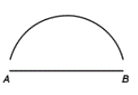
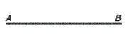
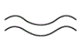
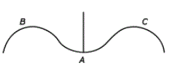
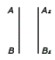
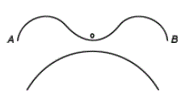

Беседа 3106 от 3877 · Беинса Дуно
Прави и криви линии
„Отче наш“
Имате ли тема? „Имаме.“ Каква? „Най-малкото добро лишение.“
За втория път пишете върху функциите на правите и кривите линии.
Трябва да се спирате и да мислите. Запример, когато една права линия се развива на носа, какво дава? Вие трябва да изучавате ония хора, които носят правите линии, и други, които носят кривите линии. Носът не седи от една права линия. Вие мислите, че линията на носа е права линия. То е проекция на правата линия. Ако разгледате един човек отблизо, той изглежда по-голям, ако го разглеждате отдалеч, е по-малък. Всъщност, както разглеждате човека отдалече и отблизо, кое е реалното в двата случая? Вие трябва да коригирате. Вие мислите, че този човек, който е близо, е по-голям, а който е далече, е по-малък. То е относително така. По някой път гледате един предмет под микроскопа – вижда ви се голям. Друг път без микроскоп не може да го видите. Питам, предметът, който виждате под микроскопа, толкова голям ли е, колкото се показва, или в микроскопа се е увеличил две–три хиляди пъти? Показва се голям, а всъщност без микроскоп не може да го видите. С микроскоп виждате нещо увеличено.
На какво се дължи, че отдалече като виждате предмета, имате една реалност, отблизо като го виждате, имате друга реалност? Когато гледате един предмет отдалече, какво виждате? Виждате в него само външната страна. Когато се приближи, виждате предмета отблизо, виждате и подробностите. Отдалече само няколко важни черти се виждат. Запример, ако гледате един човек отдалеч от един километър, какво ще видите? Ще видите само един човек, който се мърда. Колкото се приближавате, ще започнете да виждате неговия силует, тялото му, главата му, после очите му, веждите му, устата му, носа му. Най-първо виждате само един човек и казвате: „Аз го видях.“ Кое е онова в човека, което сте видели? Всички имате еднакво понятие за човека. Всеки един от вас, като види някой човек, ако ви накарат да го нарисувате, ще нарисувате човека с тия черти, които ви направили впечатление. Кое е най-важното в човека? Като го срещнете, кое ви обърна внимание? За някой човек казвате, че е много добър, друг ви се вижда енергичен, някой – флегматичен. По какво определяте това? Казвате за друг, че е умен. По какво определяте, че е умен? Или казвате, че е весел, или малко меланхоличен, или нервен, или сприхав. По какво го забелязвате?
По аналогия, приближавате се към един предмет, пипате го и казвате, че е студен или горещ. Сега тази горещина вие не я виждате, вие я усещате. Вие усещате горещината. Може да кажете: „Аз видях топлината.“ Кои неща се виждат, кои се усещат? Каква е разликата между виждането и усещането? Красотата чувства ли се, или се вижда. Топлината усещате ли я, или я виждате? Топлината се усеща. Сега няма да се спираме повече, че това са философски въпроси, понеже всичките хора не са философи.
Философите имат специфично състояние. Някои хора даже не знаят какво нещо е философия. Запример философия е какви са причините на красотата и какви са причините на грозотата, какви са причините на здравето и причините на болестта, кои са причините на невежеството и причините на знанието. Всяко нещо си има свои причини. Едни считат, че тия причини са разумни, други считат, че тия причини са неразумни. Кои са сега на правата страна? Ако един човек ви хване за ръката, ще разбере ли колко сте разумен? Какво разбирате, ако ви хване и ви стисне ръката? Някоя мечка може да ви стисне. Мечката, като ви стисне, какво ще направи? Сега, кога знанието е разумно и кога – неразумно. Ако мечката те хване, какво ще почувстваш? Нейната сила. Човек ако те хване, кога ще почувстваш, че този човек е разумен? По неговата обхода, както той постъпва, вие ще определите вашите чувства. Има нещо в обходата му разумно. Ако той се обходи разумно, ще считаш, че той разбира нещо.
Някой цигулар ви свири нещо. Как ще познаеш дали цигуларят е умен, или не е умен? Или един художник, как ще познаеш дали е умен, или не е умен? Да допуснем, чу той рисува хора с изкривени носове, с изкривени уста, с изкривени уши. Мислите ли, че този художник е много умен? Постоянно като карикатурист вижда само опакото. Да допуснем, че вие сте художници и някои от вас постоянно рисуват меланхолия, навсякъде, кого как видите, виждате все лошото. Питам, умен ли сте вие? Не е вярно това. Ако всичко в света е лошо, ако светът беше само лош, вие не може да разсъждавате, всичко щеше да бъде еднообразие и вие нямате условия за знание. За да имате знание, трябва да имате какво да сравнявате. Запример, ако една повърхност е всичката бяла, каква подробност виждате в белотата? Виждате белия цвят, но кое ви привлича вниманието? Няма специфичност в белотата. Ако увеличите туй бялото, ще видите, че има едно различие, ще видите, че тази хартия не е навсякъде еднакво бяла. Вас ви се струва, че е бяла. То е едно вътрешно понятие. Белият цвят е вътрешно понятие, както аз виждам.
Сега, по какво се познава човек, който вижда и който е сляп? Слепите хора виждат само тъмнината. Хората, които имат зрение, виждат повече – виждат светлината, виждат после и тъмнината. Слепият вижда само тъмнината, няма понятие за светлината. Онзи, който вижда, има понятие за светлината. После, тъмнината за него е сянка. Слепите хора виждат сенките на нещата. Хората на зрението виждат реалността на нещата.
Казвам, ако вие се приближите до един предмет много близо, този предмет във вашето съзнание ще покрие реалността и вие ще видите една малка сянка. Ако много се приближавате до един човек, изчезват тия специфични черти, с които ви прави впечатление.
Сега изводът какъв е? Какво трябва да прави човек? Някои работи вие обичате. Ако човек влезе във водата, може ли да живее? Не може. Човек, за да живее, трябва да бъде извън водата. Човек трябва да бъде вън от водата, но ако извадите една риба вън от водата, тя умира. Ако човек извадите извън водата, ще живее, и му е по-добре. Ако човек турите във водата, умира. Ако рибата извадите извън водата, тя умира, защото рибата живее във водата, а във водата човек умира. И защо рибата, като излезе из водата, умира, а пък човек живее? Там, дето човек живее, рибата умира; там, дето човек умира, рибата живее. Сега вие не сте философи, защото не може да разрешите този въпрос.
Сега, като разсъждавате защо рибата живее и защо човек умира във водата, ще кажете, че няма въздух. Във водата има доста въздух, как рибата намира въздуха във водата, а човек не може да го намери? Казвате, че рибата без вода не може да живее. Във въздуха има доста вода, но във въздуха рибата не може да намери водата. Човек намира водата там, дето рибата не може да намери водата. Там, дето рибата намира въздуха, човек не може да го намери. Кой е по-умен тогава? И двамата имат един въпрос, който не могат да разрешат. Рибата намира въздуха във водата, а човек не може да намери въздуха във водата. Човек намира водата във въздуха, а рибата не може да я намери.
Има два вида мъчнотии тогава. Вие, като срещнете мъчнотиите на рибата, къде трябва да разрешавате тия мъчнотии? Във водата. А като срещнете мъчнотиите на човека, тогава къде трябва да ги разрешавате? Не във водата, но във въздуха. Има мъчнотии, които се разрешават чрез въздуха, има други, които се разрешават чрез водата. Ако си сух, как ще разрешиш сухотата? Във водата ще разрешиш сухотата. Пък ако си влажен, къде ще разрешиш мъчнотията? В сухотата. Как ще се освободиш от голямата влага? Сега ще приведа на какво съответства сухотата. Сухотата и влагата на какво ще ги уподобите? Да си сух, значи имаш повече светлина. Да си влажен, значи имаш повече топлина.

Някой път вие не се харесвате, искате да бъдете някакви. Как бихте нарисували идеално човека? Някой път вие не се харесвате. Какви трябва да бъдете сега? Искате да бъдете красиви, но в какво седи красотата на човека? Казвате, че лицето не е тъй, както трябва, не е обло, не е продълговато или челото, носът не трябва да бъде такъв; носа, ушите някой път не си харесвате. Щом не се харесвате, де е погрешката?


Каква е разликата между онзи, който устоява и онзи, който побеждава. Онзи, който устоява, не показва, че той ще победи. Онзи с устата започва една война, а с ума се свършва. Яденето е една война, като хванеш изведнъж със зъбите. По някой път вие с устата, ако ухапете някого, как ще разрешите въпроса? Ако носът ви не вземе участие в тази война, ако ухапете човека, как ще свършите работата? Да кажем, забиете зъбите, кръвта излезе из устата, как ще свършите войната тогава? Много зле ще свършите. Тогава носът ще ви каже: „Този човек не трябва да го пипаш, понеже той е силен.“ Носът ще ви покаже, че не трябва да пипаш, защото, ако пипнеш, ще се намериш в трудно положение. Устата, като дойдеш до нея, тя те хваща между зъбите. Тя има само един метод – каквото дойде, казва: „Я кажете на зъбите какво решават.“ Казват: „Трябва да го сдъвчем.“
Не всички неща, които се дъвчат, са приятни. Има неща, които, като дъвчеш, са приятни. Ако дъвчем един горчив плод, какво правите? Изплювате го навън. Онзи, който не плюе, добре е ял; онзи, който не плюе, умът взел участие в яденето, той си дал мнението. А пък когато устата сама е разрешавала въпроса, без ума, винаги плюе. То са общи изводи, които са верни, че ако в една работа само устата е взела участие, ако в една работа, само чувствата са взели участие, ти ще плюеш. Ако и умът взел участие, тогава няма да плюеш, плюнката ще служи като омекчаване. Плюнката не е дадена да я изхвърлиш навън, но то е като условие за смекчаване на ония условия, които имаш, или храната да може по-лесно да влезе в стомаха.
Да дойдем сега до главния принцип. Казваме, каква е причината на нещата? Има една Разумност в света. Някои казват, че нямало никаква разумност в света. Те чувстват само нещата. Защото ти минаваш покрай едно дърво. Туй дърво ти обажда каква разумност има. Ти вървиш, онези дървета, които имат иглообразни листа – бодне те. Каква разумност има в туй бодване? Няма никаква разумност. Ти вадиш заключение, че трябва да бъдеш внимателен, понеже туй бодване на ръката е болезнено, но това бодване в очите може да те лиши от един орган, който може да ти бъде полезен. Ако те бодне туй листце, каква разумност има в туй бодване? Там няма никаква разумност, но ако дълбоко си заспал, че дойде някой твой приятел, не те бута, но те бодне с една игла, ти скочиш. Тогава в туй бодване има смисъл. В самото бодване няма, но онзи, който те бодва, употребява бодването за нещо разумно, той има нещо в ума си. След като се прояви твоето съзнание, може да ти каже защо те е боднал.
Нали сега вие всички обичате да бодвате. Всеки от вас има една игла, с нея се бодвате. Много обиди стават, понеже някой път не знаете как да бодвате. Запример наместо да забиеш иглата една десета от милиметъра, ти забиеш цял един милиметър. Наместо да забиеш иглата един път, ти забиваш десет пъти повече, отколкото трябва. Вие казвате тъй: „Ти си голям невежа.“ В какво седи обидата тук? Обидата седи в това, че не говориш една истина. Казваш: „Ти си много лош човек.“ В какво седи лошавината? Не знаеш да се обхождаш. В какво седи добрата обхода? Ако караш човека със счупения крак да ходи, умен човек ли си? Значи, какво трябва да правиш със счупения крак? Ще вземеш човека на гърба, ще го носиш. Тогава ти минаваш за добър човек, искаш да помагаш. Срещнеш един здрав човек, туриш го на гърба си, какъв ще бъдеш? Този, който го носиш, може като тебе да върви. Казваш: „Хайде, да не се умориш, ела на гърба, ще те нося.“ Питам: какви са съображенията? Ако носиш този със счупения крак, разбирам, но ако носиш този със здравия крак…
Вие не трябва да се спрете, да имате едно статическо положение. Какво трябва да правите? На здравия ще кажете: „Ела да ходим двамата. Ако ме носиш на гърба, ти си будала. Ако вървим заедно, ти си умен.“ Ако туриш този със счупения крак да ходи, ти си от невежите, не разбираш отношенията на нещата. Човек със счупения крак не ходи с него. По някой път казвате: „Ние такива глупости не правим.“ Всичките хора все от това страдат. На дълъг път с едно счупено чувство, с едно накърнено чувство не ходи. И на чувствата се чупят краката. Мисълта има много деликатни крака. На мисълта краката са малко сухички, тънки, много деликатни. На чувствата краката са цамбурлести. Значи счупеното чувство ще го носиш на гърба си. Здравото чувство ще го туриш в пътя, него няма да го носиш.
Тогава, да кажем, вие се интересувате за някой човек да знаете. Природата скрила някои работи, иска да ви опита, да разгадаете тайните. Ти си любознателен. Искаш да знаеш какво правят двама души. Когато в някоя стая са турени ябълки, децата гледат, искат да знаят откъде да влязат, да си вземат от ябълките. Те търсят начин да се приближат близо до тях. Често децата са любознателни да видят какво има в тръвната, защото кокошките обичат там да снасят яйцата. Поглеждат дали има яйца, посягат, и го турят в джоба. Това малкото дете отива на бакалина и си купува захар с яйцето, размяна става. Детето, което не е любознателно, не го интересува яйцето, не се спира, само погледне. Научно го интересува, то знае туй яйце какво ще го ползва. Може да има за него яйце, ще го тури в джоба, занася го на бакалина, казва: „Дай си мнението сега.“ Вие не правите ли така във вашите тръвни, не бъркате ли във вашите кесии? Вие казвате, че тази постъпка, която детето направило, не е разумна. В дадения случай туй дете иска да знае каква сила има в туй яйце, каква е силата.
Мене ми разправяше едно момиченце. Останало с баща си вкъщи, то намерило в тръвната две яйца. Вижда, че баща му спи. То заравя яйцата в пепелта и чака да се опекат, да ги изяде, съображения има. Ако я обвинят, че тя опекла яйцата – баща ѝ е вкъщи. Казва: „Тия яйца, като ги заравят, ги плюят.“ Защо ги плюят? Понеже не се пукат. Ако ги зарови и не ги плюе, след десет минути се пукат: този въздух в яйцето, като се затопли, ги пука. „Като пукна, казва, баща ми скочи. Аз излязох из вратата навън. Баща ми беше умен човек, помисли си, че нещо в съня си е скочил и си легна пак.“ Сега децата плюят яйцата, за да не се пукат. Туй става, когато жарта е много силна, тогава се пукат. Ако е умерена, не се пукат. Казвам, от кого човек се е научил да ги плюе. Той е направил хиляди опити, и децата вече знаят мярката, знаят, че ако не се наплюе, яйцето се пука, и вземат предпазителни мерки.

Носът има известна чувствителност, устата има друга чувствителност. Устата показва един предмет какво може да ти даде. Чувствителността на устата показва предметът каква полза може да принесе, какво може да ти даде, да задоволиш твоите чувства. Чувствителността на носа показва какво може ти разумно да се ползваш. Следователно, когато чувствителността на носа е нормална, неизопачена, човек разсъждава нормално, правилно.
Та с тия сетива човек усеща нещата, но от носа започва разумната страна. Чрез ума си ние познаваме, че всичките неща имат отношение едно към друго. Какви са отношенията на тия две линии AB и A1B1? 
Накъде се движи? Посоката на движението накъде е? Вие вървите тъй напред, но посоката на вашето движение накъде е? Посоката е нагоре. Значи, ако ти отиваш нанякъде, трябва да знаеш накъде отиваш. Отиваш горе в планината, кой е стимулът в тебе? Не само в една посока, но туй движение може да бъде в много посоки. В умствения свят ние искаме нашите чувства да хванат правия път. Този път нагоре е път на разрешение. В плоскостта ние определяме дължината на нещата и широчината, но нещата трябва не само да се удължават и да се разширяват, но трябва и да се удебеляват. Влизаме вече в първото, второто и третото измерение. Човек се движи в три посоки, но може да се движи и в четири. Ако правилно мислиш, ти се движиш в четири посоки. Ти трябва да знаеш отношението на първото измерение. Има същества, които живеят в тялото. Трябва да разбираме отношенията на телата на третото измерение.
Човек, като започне да мисли, той навлязъл в четвъртото измерение, в света на растенето. В света на човешката мисъл нещата се разширяват. Растенето е едно разширение. Ако имате четири точки, имате един квадрат и до него образувате друг квадрат. Туй не е органическо растене, то е механическо натрупване. В четвъртото измерение нещата се организират, имат растене. Едно нещо расте, както една семка. Ако турите едно пясъчно зърно в земята, не може да расте. Може да турите хиляди пясъчни зрънца, механически да ги съедините, да направите едно механическо тяло – направите циментена каша, но кашата не показва процес на растене. Ако турите една семка, след десет–петнайсет години ще видите, че тази семка образува цяло едно дърво.
Та казвам, когато човек механически се развива, той с това произвежда своята смърт; когато органически се развива, произвежда процесите на истинския живот. Когато човек се развива правилно, той не умира.
Защо устата се е огънала надолу?

Казвам, човек в умствения свят трябва да бъде много умен. Аз съм наблюдавал и животните, и хората. Някои деца, като се замерват с камъни – някой път децата се събират на две тайфи и започват да се замерват с камъни – като хвърли камъка, другото дете още отдалече знае, наведе се. По някой път не може да се наведе както трябва, хлопне го. С камъни правят война. В живота като хвърлиш камък на някое куче, то се завърти, и то прави същите движения.
Та казвам, в мисловния свят ония, които са разумни, щом ги задяват, той се навежда. По някой път ти напишеш една статия във вестника и щом започнат да те нападат, какво трябва да правиш? Как бихте разрешили въпроса? Да кажем, вие сте поет, напишете нещо хубаво, някой ви критикува, казва: „Много глупава работа, думите не са намясто.“ Какво трябва да правите? Сега, ако той е един добър критик, той ще ви коригира правилно. Казва: „Еди-коя си дума еди-къде си трябва да се тури така и така.“ Той върви по хармоничен път. „Планини високи, долини дълбоки, полета кални, планински върхове сухи…“ – поезия ли е това? Че в полетата става кал – „полета кални, върхове сухи“, как ще разберете сега този въпрос? Този човек писал нещо, но той от поезия нищо не разбира.
Каква беше темата? „Най-малкото добро лишение“. Има много дефиниции. Да кажем, правите вие баница с най-малките разноски. Или направите баница, която ще струва три–четири хиляди лева, и правите баница, която ще струва пет хиляди лева. Другата струва три–четири. Пет хиляди лева, казвате: „Как може това?“ Стават тия работи, увеличават се. Когато идвал руският император в България, излязъл му цирей. Лекувал го един българин. Купил една лоена свещ за двайсет и пет стотинки. Обаче тази свещ, като преминала през всичките книги, станала дванайсет хиляди рубли. Да пишат в книгите за един цар е срамота, двайсет и пет стотинки, много евтино. Турили дванайсет хиляди. Питам, вярно ли е това? Не е вярно. Какви са съображенията? Съображенията са всеки да вкуси от лоената свещ. Чудното е, че като ядат свещ, тя се увеличава – от двайсет и пет стотинки става на дванайсет хиляди. Колко пъти се е увеличила?
Сега по какво се отличава един поет? Поетът може да описва нещата както са. Изобщо целта на поета е, като описва страданията, да ги опише такива, каквито са. Целта е да опише нещата в стихове такива, каквито са. Може някой да ги направи ясни, преувеличени, той може да ги направи по-малки, по-големи, за да бъдат ясни за човешкия ум, но всичките поети имат желание да опишат страданието, тъй както е, и да опишат красотата на някой предмет, тъй както е.
Казвам, когато нещата не се турят в техния истински образ, не е поетично. Всичките неща, които се турят в образи, които са естествени, са поетични. Та всеки от вас може да бъде поет. Когато мислите право, вие сте поет. Когато мислите криво, вие не сте поет. Страданията в света аз ги наричам – това са недовършени работи. Ти идеш в бакалницата, купиш си захар за двайсет и пет стотинки, дадеш веднага парите. Ти купуваш от бакалницата, и една–две години не плащаш, събират се много. Ти започваш да се съмняваш, че те са надписали. Вие не сте писали поезия. Поезията се изгубва, щом започнеш да критикуваш, защото поетът е бакалин, той пише. Ти си критик, който взимаш. Казваш: „Не си го направил правилно.“ Тогава ще започнете да се проверявате, понеже ти всякога не си вземал по двайсет и пет стотинки, някога си взимал по за два лева. Разнообразие.
Казвам, когато хората се критикуват в поезията, аз считам, че със звонкови не се е плащало. Щом ме критикуват, тогава кой е бакалинът? Онзи, който те критикува, той е онзи, който вземал назаем. Ти ще кажеш в себе си: „Аз съм бакалинът, той е един от клиентите, който може да ме критикува.“ Като те критикува направо, ще кажеш: „Аз съм бакалинът, той е клиентът. Клиентът има право да критикува бакалина.“ И той критикува някой път. Кога? Той пише, горкият. Казва, той е поет. Но казвам, този бакалин, ако нямаше клиенти, ако клиентите не вземаха назаем, щеше ли да стане поет? Да благодари, че тези клиенти не плащат: той се научи да пише. Като плащат те, той не пише, но все таки той иска да знае колко оборот е направил, трябва да знае колко пари е взел. Държавата ще каже, че от този капитал, с който търговецът търгува, държавата трябва да вземе нещо. Бакалинът много причини има да стане поет, външни са причините, които го заставят да пише.
По някой път искате да знаете защо са мъчнотиите в света. За да станете поети. Без мъчнотии поезия не може да има; страданията, това са поезията в света. Ти в противоречията започваш да мислиш. Ако знаеш как да мислиш, то е разумно нещо в природата. Тя ще те застави да мислиш. Като започнеш да мислиш добре, тия страдания вече изгубват своя ефект. Те не са такива мъчения, както ние мислим.
Та казвам, при сегашните условия вече му е даден известен капитал в неговия ум, в мозъка. Има известен капитал, вложен в неговото сърце, има известен капитал, вложен в неговото тяло. Даденият капитал трябва да се обработва. За бъдеще ще има други условия. В дадения случай използвай това, което имаш, защото ти, като роптаеш, ще намериш основата. Защо роптаеш, че животът ти не е добър? Ти всякога можеш да го направиш добър. Вие ще бъдете толкова умни…
Двама приятели се оплаквали, не им вървяло. Ученици били, искали да учат, нямат средства. Казват: „Другите ще станат учени, ние дето ходим, никой нищо не ни дава.“ Един ден един им казва: „Аз да ви дам един съвет. Един български чорбаджия обича да се разхожда покрай брега на реката. Като се разхожда, единият от вас ще го блъсне в реката, пък другият ще иде да го извади. Като го извадите, той ще ви даде, и вие туй ще си го разделите.“ Те направят опита. Той като се разхожда, единият го блъска, другият се спуска да го извади. Казва: „Синко, ти спаси живота ми. Ти си много добро дете. Ела, аз ще те уча, синко.“
Вас ви се вижда малко приказно, че дето ще ходиш да крадеш, блъсни богатия във водата, другият да го извади. Богатият казва: „Синко, аз много ти благодаря, че ти не мислиш като онзи. Ако и двамата ме бяхте блъснали, щях да се удавя. Добре че единият мисли да ме блъсне, а другият не мисли така.“ Богатият разсъждава правилно. Казва: „Ела да те изуча, та да няма нужда да блъскате чорбаджията във водата.“
Или аз изваждам заключението: като си чорбаджия, не чакай да те блъснат в реката, че тогава да помагаш, предвиждай нещата. То е предвидливост. Ако не предвиждаш, природата ще те тури в трудно положение, докато те застави да мислиш. Може да се случи да те блъснат. Вие може да се смеете, но колцина от вас не сте изваждани от водата, които не сте блъскани?
Казвам, развивайте дарбите, които са поставени във вас. Някои от вас имате изобретателност. Вие, като седите, не знаете какво да правите, изобретете нещо. В този клас изобретете нещо. Всички не сте богати, умът ви работи, защо да не изучавате предмета по научен начин, на физическа основа да може да намерите начин да намирате златото в земята? Златото има особени трептения. Сега във физиката имат известни инструменти, отдалеч знаят какво направление вземат тия подводници, следят движението на тия подводници, пуснат мината и може да потопят кораба. Учени хора са, като се движи подводницата, отбелязват с един инструмент движението: както сянката на един предмет, така се движат и тия вълни. Един седи и наблюдава, а инструментът показва накъде е подводницата. Като дойде до известно място, бутне едно бутонче, там има мина поставена, и избухне мината. Хората от зор са научили тия работи.
Някой път, вие не сте правили опити, да помиришеш парите на какво миришат. Ваши двама приятели, като турят наполеон в земята, го намират с пръчката, но други заровени пари не могат да намерят. Те намират заровения наполеон, защото умът на тия, които го заровили, работи – между онзи, който го заровил, и онзи, който търси, има връзка и той с мисълта им помага. Не че той е научил това изкуство да намира заровени пари. Туй още не е знание. Знанието е непосредствено ония вълни, които излизат от парите, ония радиации, да ги схванеш. Ако това можеш да схващаш, ти ще идеш направо на мястото.
За туй състояние човек трябва да бъде много чист. Всички хора страдат от една вътрешна нечистота, която препятства на инструмента, който Бог ви е дал. Ако вие всички бяхте живели добре, според Божия закон, всичко в света е така направено, че и най-големите мъчнотии лесно се разрешават. Ако мъчно се разрешават, причината е във вас, вашият инструмент не работи. Ако са повредени очите, причината е в инструмента. Ако очите ви са здрави, няма да се блъскате. Ако сърцето ви функционира правилно, ако умът ви функционира правилно, всичко ще се нарежда добре. Противоречията, които съществуват в света, имат една вътрешна анормалност.
Та сега, когато ви дойде една мъчнотия, считайте, че е за добро, не само за добро, но търсете едно разрешение. Да кажем, една малка постъпка може да поправи положението. Един пример. Един голям банкерин дава обявление, че му трябва един касиер, един честен момък търси за касиер. Явяват се десет–петнайсет души, всички с препоръки. Той, като ги поглежда, казва: „Ще ви имам предвид.“ Влиза един млад момък, но преди да иде при него, вижда един лист, паднал на земята. Навежда се, вдига го. Казва: „Четох във вестника, че ви трябва един касиер. Аз нямам препоръки.“ „Вие, казва, носите най-добрата препоръка. Вдигането на този лист и поставянето намясто е най-голямата препоръка. Значи може да бъдете касиер.“ Вдигането на листа и поставянето намясто, то е един навик в него, една добра черта, то спасява цялото положение. Другите минават, и не виждат листа.
Казвам, онзи, който се навежда, той е, който учи. Ако създадеш в себе си един добър навик, то е спасителното положение. Не се дразнете. Вие се сърдите някой път за нищо и никакво. Или имате една задача, не давате достатъчно време. Сега на вас ще ви дам да изучите „Махар Бену“ и „Давай, давай“. Всеки един да изучи едната песен за две–три седмици. Всеки да изпее песента по начин, както той намира за добре. Може да вземете едната или другата песен, но да я изпеете по всичките музикални правила, не като някой оперен певец. Ако цялата песен не можете, то половината или четвъртината.
В музиката трябва да се пее ясно, да се вложи красота в тона, а същевременно и мекота. Когато пее човек, трябва да има яснота, ясен трябва да бъде гласът. Всякога, когато човек не се тревожи, гласът е ясен. Щом се тревожи, има известни трептения. Щом човек има хубаво разположение, то се отразява върху ларинкса, гласът е ясен. Щом неговите чувства са естествени, тази пълнота се предава. Някой човек пее, има нещо хубаво в гласа му. Някой път изпейте една песен на един ваш приятел и кажете колко пари ще ви даде за песента. Колко ще му се откъсне, като те слуша? Може да пееш, пък нищо не ти дава, значи имаш още да работиш. Ако извади, че ти даде десет–двайсет стотинки, един лев, то е нещо, защото вашият приятел не е богат. Ако ви даде един грош, може да е много, ако вземете неговото материално положение. Той, да кажем, има десет гроша в джоба си, и ви даде един грош – доста е.
Българинът – десет стотинки дава, не му прави впечатление. Като му кажеш двайсет стотинки, вижда му се много. Като мине трийсет–четирийсет стотинки, пак дава, но двайсет е много нещо. Изобщо, ако кажеш двайсет, много му се вижда, двайсет за него е динамично число. Като дойде до двайсет, мисълта работи. При десет не мисли и при трийсет не мисли, като кажеш двайсет, много му се вижда, мисли. Ако искаш десет, дава, двайсет не дава. Ако поискаш двайсет, казва: „Двайсет не давам. Трийсет давам, но двайсет не давам.“ Счита го фатално. Може да даде двайсет и една, но двайсет не дава. Туй число за българите е динамично, както тринайсет в Европа. Ти не може да накараш някой да влезе в стая с номер тринайсет и затова там в хотелите ще намериш дванайсет, дванайсет и половина, но тринайсет няма. Динамични мисли има. Динамичните мисли спират. Една динамична мисъл не може да я спреш. Тя иска разрешение. В живота има динамични мисли. Всеки трябва да ги употребява намясто. Ако ти една динамична мисъл не я употребяваш намясто, ще страдаш.
Сега коя мисъл остана? Много работи говорихме. Започнахме с човешката уста. С устата въпросът не се разрешава. Някой човек иска пари назаем и искаш да знаеш дали ще ги върне. В това време си бърше устата с кърпа – той не мисли да ги върне. Друг иска пари назаем. Питаш го: „Ще ги върнеш ли?“ Той си туря пръста на носа – този човек мисли, той ще ги върне. Който си бърше устата, казва: „Ще ги изям всичките.“
В човека има известни положителни и кинетически сили, които трябва да ги развиете. Ние сме в края на една епоха, има много материал насъбран. Ние се намираме в живота пред мисли и желания неразрешени. Запример има в тебе едно чувство на обида. Човек трябва да се налага, че трябва да се обиждаш, но при обидата трябва да разрешиш въпроса. Обидиш се – ако разрешиш въпроса, право е; ако не си разрешил обидата, ще дойде експлозия наново. На една бомба може да се запали фитилът, но умният човек няма да остави да изгори, той ще отреже фитила. После ще знае как да извади тия възпламенителни вещества от този материал, да се освободи бомбата. Всяка една динамична мисъл е като една бомба, на която трябва да се отреже фитилът и да се извади възпламенителното вещество. Изисква се работа. Всичката опасност е в тази взривност. Някой път вие се докачате, не мислите. Казал ви някой нещо. Някой може да се докачи от много, някой може да се докачи от малко. Човек трябва да бъде толкова умен, че да не се докача никога.
Сега, да кажем, че вие се обезсърчите. Какво трябва да правите? Художникът се обезсърчи, какво трябва да прави? Да рисува. Отива един американец с изкуствен нос в Италия при един отличен художник да го рисува. Казва му: „Ще ви нарисувам“ и му туря една голяма сума. Казва: „Колкото искате, ще ви платя, само да ме нарисувате.“ Рисувал го един ден. На другия ден отива, но турил носа си малко накриво. Цяла седмица отива да го нарисува и най-после художникът казва: „Господине, за пръв път срещам като вашия нос, не мога да го нарисувам.“ Той казва: „Никой досега не е успял да го нарисува, постоянно се движи, не е естествен.“
Не разрешавайте изкуствените въпроси. Изкуственият нос, то е един въпрос, който не може да се разреши. Има задачи в света, които не търпят никакво разрешение: както и да го разрешаваш, ще видиш, че някъде е мръднало. Разрешавайте онова, което принадлежи към Божествения свят. Разрешавайте Божествените задачи, те са естествени. Човешките задачи са изкуствен нос – нямат разрешение. Човешките работи ще ги оставите, те са една сянка на реалността. Един изкуствен нос е по-добре, отколкото без нос. Едно малко зло е за предпочитане. Един изкуствен нос е за предпочитане, отколкото без нос да бъдеш, макар и изкуствен. Та изкуственият нос ни най-малко не може да определи твоята разумност. Но при един естествен нос веднага ще се определи твоята интелигентност.
Когато се намирате в трудно положение, погледнете носа си и кажете: „Много си добър, разреши този въпрос.“ Погали носа си отгоре. За в бъдеще бих ви препоръчал да носите една кърпа много хубава и не хващайте носа с ръка, но с кърпата. Сутрин вземи кърпата, поглади носа си. Ако искате да се развивате хубаво, пипайте носа си много добре, особено онези от вас, които искате да бъдете художници, музиканти, пипайте добре носа си. Другояче няма да се научите. Пипането събужда ония хубави, възвишени чувства.
Природата е нещо много чувствително. Всяко побутване вече произвежда ефект. Всяка мисъл, всяко чувство, всяка постъпка, всичко това трябва да знаеш. Каквото помислиш, каквото вършиш, всичко това произвежда известен ефект. Когато бутнеш всяка мисъл, ръцете трябва да бъдат чисти, че ако не са чисти, пръстите ще оставят петно върху тебе. Като дойде човек да побутне, трябва да мисли. В чувства, в мисли, в действия човек трябва да бъде чист. Разумен трябва да бъде, да не прави нещата, както и да е.
И за бъдеще, за да бъдеш умен, умът ти трябва да функционира добре; за да бъдеш добър, сърцето ти трябва да функционира добре и за да бъдеш силен, тялото ти трябва да функционира добре. Туй зависи от светлината, която възприемате, зависи от топлината, зависи от силата, която постоянно се влива. Защото има една светлина, която постоянно трябва да се влива в човека.
Казвам, хубаво да мислиш – разбирам процеса на вливането на светлина. Когато кажем, че добре трябва да чувстваме, разбирам вливането на Божествената топлина. Когато кажем, че добре трябва да работим, разбираме вливането на Божествената енергия в човека, на силата. Тогава човек е винаги здрав.
Казвам, когато говорим за добра обхода в мисли, чувства и постъпки, ние разбираме правилното вливане на светлината, топлината и Божествената сила в човешкия организъм.
Човек трябва вечно да се подмладява. Животът не е нищо друго освен вечно подмладяване.
„Само светлият път на Мъдростта води към Истината. В Истината е скрит животът.“
Пета лекция на Младежкия окултен клас
10 ноември 1939 г., петък, 5 ч сутринта
София – Изгрев